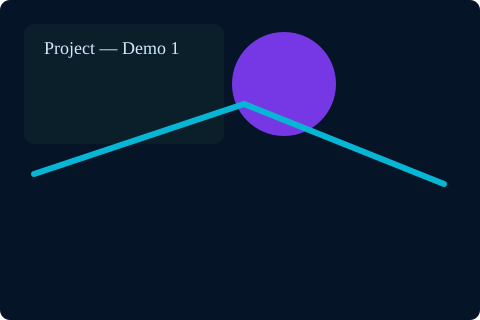
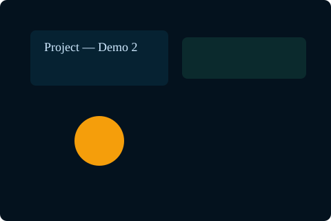
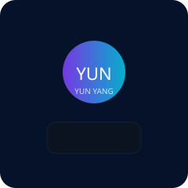

關於我
嗨，我是 YUN YUN YANG。這個頁面示範簡單個人頁面配置，包含不重複的圖片與一個互動 DEMO。
作品 / 圖片


DEMO
下面是一個簡單的互動粒子 DEMO：滑鼠移動會吸引粒子，點擊可以重新產生顏色主題。

深度強化學習 | Personal Demo Page
嗨，我是 YUN YUN YANG。這個頁面示範簡單個人頁面配置，包含不重複的圖片與一個互動 DEMO。


下面是一個簡單的互動粒子 DEMO：滑鼠移動會吸引粒子，點擊可以重新產生顏色主題。